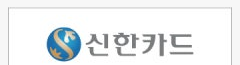
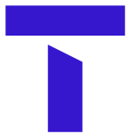
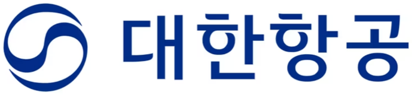

협의체 회원 복지시설이 받는 혜택
1
유튜브 시청자를 후원자로 유입
결연 유튜버가 복지시설을 소개하는 영상을 채널에 올리면, 그 영상을 본 시청자가 실제 후원자로 유입되어 후원금이 늘어납니다. 촬영·편집 비용은 복지시설이 부담하지 않습니다.
실제로 이렇게 만들어집니다 — 이미 결연을 맺은 복지시설들의 영상 사례


2
포인트 기부 연계
시청자가 카드·통신사·항공 포인트를 정기기부로 전환하면, 결연 채널을 거쳐 복지시설로 자동 연결됩니다. 현금 후원 외에 새로운 후원 창구가 늘어납니다.

카드 포인트
통신사 포인트
항공 마일리지 복지시설로 자동 연결3
나눔이음바자에서 원하는 상품을 무료로
협의체 참여 복지시설은 나눔이음바자에 등록된 상품 중 원하는 것을 골라 무료로 받을 수 있습니다. 포인트 기부로 쌓인 기부포인트를 차감해 받거나, 기부 물품으로 등록된 상품은 포인트 없이도 그대로 받을 수 있습니다.
무료로 상품 받기 →4
공식 결연 인증
협의체가 검증한 결연 관계임을 나타내는 공식 인증이 부여되어, 복지시설과 채널 양쪽의 신뢰도를 높입니다.
나눔이음 공식 결연 인증
5
비용 부담 없음
협의체 가입비, 연회비 등 어떠한 비용도 발생하지 않습니다.
0원가입비·연회비·수수료 전부 없음
나눔이음바자란?
기부금을 현금화해 복지시설의 용도 제한 계좌로 입금하고, 그 잔액은 나눔이음바자에서
필요한 물품을 구매하는 데에만 사용할 수 있도록 만든 전용 장터입니다. 판매자가 등록한
기부 물품은 무료로 신청해 받을 수도 있습니다.